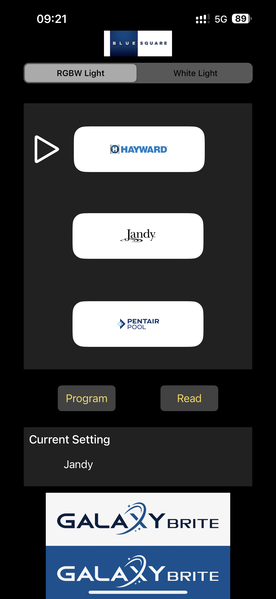
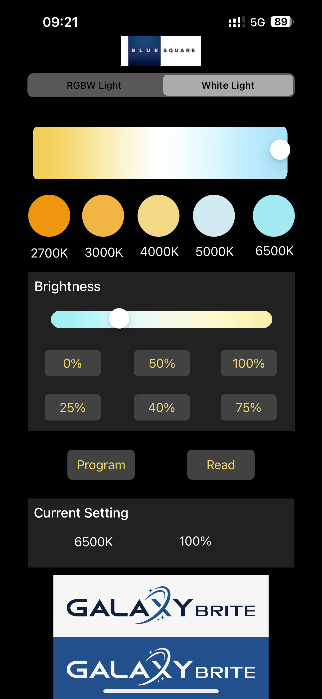

GalaxyBrite 360 Setup - User Guide
This guide provides instructions on using the GalaxyBrite 360 Setup app to configure GalaxyBrite pool lights. The app utilizes NFC functionality to program settings directly to GalaxyBrite products. Please follow the steps below to adjust RGBW light settings for compatibility with popular control platforms, and to configure white light settings such as color temperature and brightness.
Setting Up RGBW Light
To set up RGBW lights for different control platforms:
- Open the app and select the RGBW Light tab at the top of the screen.
- Choose the desired control platform from the options available: Hayward, Jandy, or Pentair.
- After selecting a platform, tap the Program button to apply the configuration. This will use NFC to communicate the selected settings to the GalaxyBrite product.
- You can also tap the Read button to check the current settings of the connected RGBW light.

Configuring White Light
To configure white lights for specific color temperature and brightness levels:
- Open the app and select the White Light tab at the top of the screen.
- Adjust the color temperature by using the slider or selecting a preset option (e.g., 2700K, 3000K, 4000K, 5000K, or 6500K).
- Set the brightness level using the slider or one of the percentage options (e.g., 0%, 25%, 40%, 50%, 75%, 100%).
- After making your adjustments, tap the Program button to apply these settings to the white light fixture via NFC.
- To verify the current settings on the connected white light product, tap the Read button.

Current Setting Display
At the bottom of the screen, the app displays the Current Setting section, where you can view the selected settings for color temperature and brightness (for white light) or the configured control platform (for RGBW light) based on the latest programmed values.